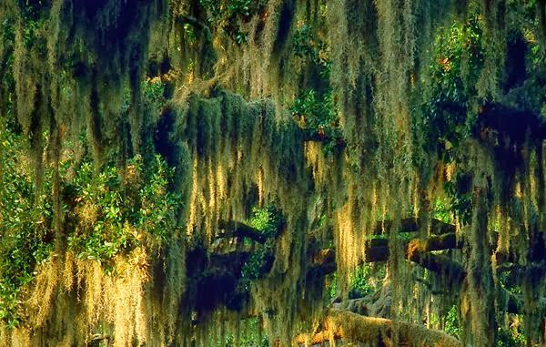

Figure 3. Mysterious hanging moss canopy [4].
Unlike ferns and flowers, moss is not vascularized at all. They have very primitive lumens that allow conductivity [3]. Also, rather than absorb water through roots, a moss has no roots and must absorb water through its leaves, which are one cell thick. [2]
Additionally, moss requires water to reproduce. When the moss is underwater, the male sperm must swim to the tip of the stem of the female plant in order to fertilize its ovum [1].
| Water type | Harmful Solutes | Availability | Nutrients |
|---|---|---|---|
| distilled | none | expensive | none |
| tap | Mg, Ca, F, Cl | readily | none |
| rain | none | free | nitrates, ammonium |